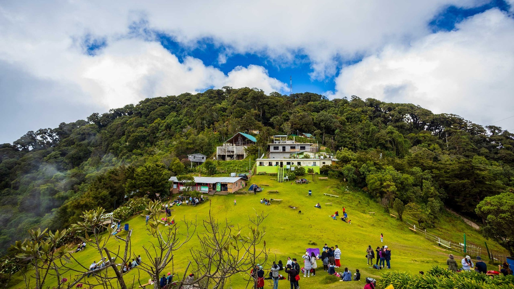

El Cerro El Pital
es la montaña más alta de El Salvador, con 2,730 msnm, ubicada en Chalatenango en la frontera
con Honduras. Destaca por su clima frío (a menudo cerca de a),
bosques de pinos/encinos, y vistas panorámicas. Es ideal para camping,
senderismo (Peña Rajada) y turismo de aventura